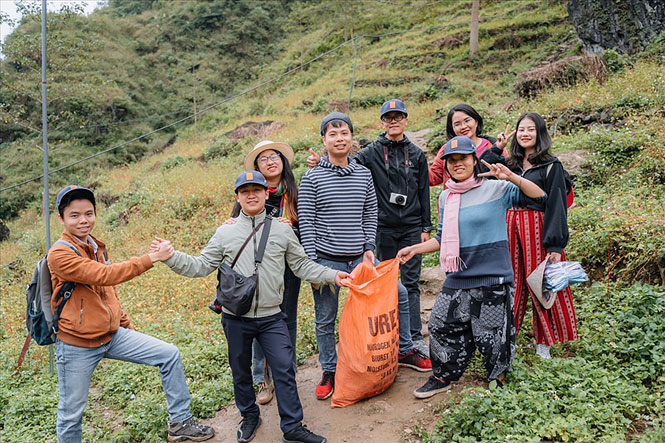
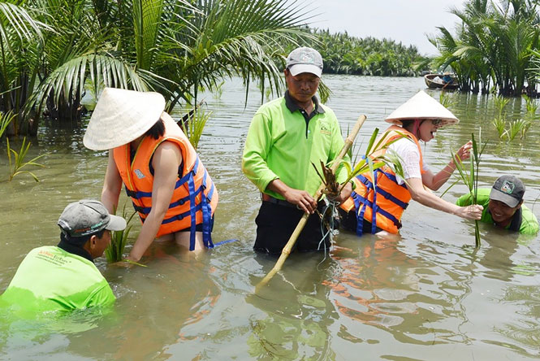

Du lịch bảo vệ môi trường là xu hướng hiện được nhiều doanh nghiệp lữ hành quan tâm. Trong khi không ít người cho rằng, đi du lịch phải được hưởng các dịch vụ một cách đầy đủ, thoải mái chứ không phải để đi nhặt rác thì vẫn có những người lựa chọn đi ngược chiều với số đông, bởi họ ý thức được rằng, đó mới là hướng đi bền vững và có trách nhiệm.
Trần Việt Anh (trái) và nhóm travel blogger trong chuyến nhặt rác tại Hà Giang.
Rác thải, đặc biệt rác thải nhựa, luôn là nỗi ám ảnh ở những địa phương phát triển du lịch. Không khó để bắt gặp tại nhiều bãi biển hay vùng núi cao những bãi rác khổng lồ do du khách bỏ lại và tích tụ qua năm tháng. Theo thống kê, phải mất từ 100 - 1.000 năm, rác thải nhựa mới bị phân hủy. Việt Nam hiện là một trong 5 quốc gia châu Á xả rác thải nhựa nhiều nhất ra biển. Từ con số đáng báo động trên, ngày càng nhiều doanh nghiệp lữ hành đã lồng ghép các hoạt động thu gom rác thải nhựa vào chương trình tour như: Vietravel, Oxalis Adventure Tours, Tiên Phong Travel, Hoi An Kayak Tours, Danang Ocean Tours... Mở đầu cho phong trào đi du lịch nhặt rác từ cách đây gần chục năm là Công ty lữ hành Vietravel với hình ảnh du khách tay cầm túi nilon, tay cầm kẹp nhặt rác trên bãi biển khiến nhiều người ngạc nhiên. Tiếp đó là Oxalis Adventure Tours với tour Sơn Đoòng. Mặc dù du khách ăn nghỉ, sinh hoạt trong hang gần nửa tháng, nhưng khi họ rời đi, hang Sơn Đoòng lại sạch sẽ như chưa từng có người đặt chân đến. Đầu năm 2020, Công ty Tiên Phong Travel cũng triển khai chiến dịch vớt rác tại suối Yến, chùa Hương (huyện Mỹ Đức, Hà Nội) thu hút nhiều bạn trẻ tham gia. Tại Hội An (Quảng Nam), vài năm gần đây, Công ty Hoi An Kayak Tours đã triển khai chương trình trải nghiệm chèo thuyền kayak trên sông Hoài và vớt rác trên sông. Đại diện công ty cho biết, đây là tour phi lợi nhuận, miễn phí hoàn toàn với du khách trong nước và tính phí 10USD/người với khách nước ngoài để trang trải các chi phí tổ chức, phương tiện vận chuyển, tập kết rác... và được rất nhiều du khách hưởng ứng. Nhiều travel blogger (người đi và viết về các điểm đến, trải nghiệm) nổi tiếng cũng phát động tour nhặt rác nhằm nâng cao ý thức bảo vệ môi trường cho du khách. Trần Việt Anh, blogger 30 tuổi đã đi hết 63 tỉnh, thành của Việt Nam và 11 nước Đông Nam Á là người truyền cảm hứng xê dịch cho nhiều bạn trẻ với 28 nghìn lượt người theo dõi trên trang facebook cá nhân và hơn 4 triệu độc giả trên trang dulichbui24.com. Trong mỗi bài viết, clip về các điểm đến, Việt Anh luôn hướng dẫn các bạn trẻ không xả rác trực tiếp ra môi trường. Từ năm 2017, Việt Anh bắt đầu lên ý tưởng cho các tour nhặt rác. “Việc đi du lịch kết hợp với nhặt rác ban đầu khó thu hút người tham gia, nhưng bằng sức ảnh hưởng của mình, tôi đã thuyết phục được bạn bè và những người xung quanh cùng hành động bảo vệ môi trường, qua đó mọi người sẽ hiểu hơn về du lịch có trách nhiệm”, Việt Anh chia sẻ.
Gia tăng lựa chọn “du lịch xanh” Có thể nhận thấy, ý thức bảo vệ môi trường của du khách ngày càng thay đổi theo chiều hướng tích cực trong thời gian qua. Chương trình khảo sát “Tương lai của du lịch” do Booking.com thực hiện trong năm 2020 với sự tham gia của 500 du khách Việt Nam cho thấy, dịch Covid-19 đã tác động và thay đổi nhận thức du khách: 59% du khách bắt đầu tìm kiếm cách đi du lịch bền vững hơn để giảm tác động lên môi trường và cộng đồng địa phương, 54% tránh đi du lịch mùa cao điểm, 52% cân nhắc giảm lượng rác thải và tái chế nhựa, 81% hy vọng ngành Du lịch có thể đưa ra thêm nhiều lựa chọn du lịch bền vững... Đây là gợi ý để các doanh nghiệp lữ hành, dịch vụ chuyển đổi cách làm, tăng cường sử dụng vật liệu tái chế hoặc tự hủy trong hệ thống sản phẩm để vừa bảo vệ môi trường, vừa tạo nên những trải nghiệm ấn tượng cho du khách. Tiến sĩ Đỗ Thị Thanh Hoa, Phó Viện trưởng Viện Nghiên cứu Phát triển Du lịch cho rằng: Thời gian tới, xu hướng du lịch sinh thái sẽ tiếp tục phát triển mạnh bởi những lợi ích kinh tế - xã hội và môi trường của loại hình này, đồng thời phản ánh mối quan tâm của khách du lịch, của toàn cầu đến sự phát triển bền vững. Đó là sự gia tăng các tour du lịch xanh, tour tìm hiểu và chung tay bảo vệ thế giới tự nhiên, động vật hoang dã; các chuyến đi kết hợp với hoạt động bảo tồn, bảo vệ đa dạng sinh học, tài nguyên môi trường tại các vườn quốc gia, khu bảo tồn tự nhiên... “Các thuật ngữ “du lịch xanh”, “du lịch thân thiện môi trường”, “du lịch không rác thải nhựa”... không còn xa lạ với du khách mà nó đang ngày càng gia tăng trong lựa chọn dịch vụ của du khách”, bà Hoa cho biết. Đó chính là dấu hiệu cho thấy, vấn đề bảo vệ môi trường gắn với du lịch trách nhiệm, du lịch bền vững đang ngày càng được xã hội quan tâm.